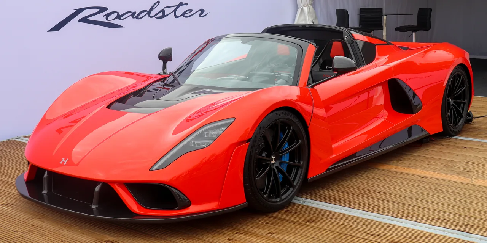
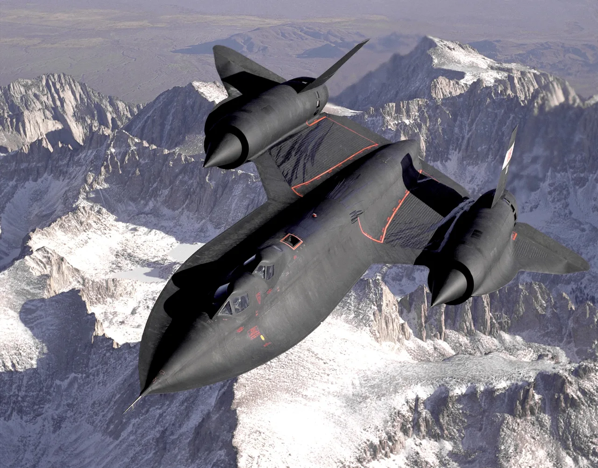
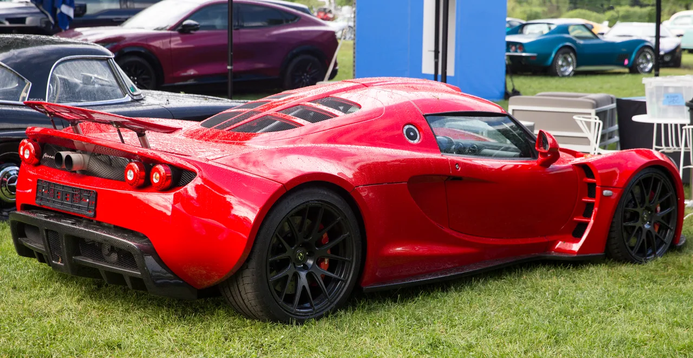

▲ 헤네시 베놈 F5 로드스터 — 블랙버드는 이 차에 이어 헤네시의 세 번째 하이퍼카로 개발되고 있다
미국 튜닝·하이퍼카 제조사 헤네시가 베놈 GT, 베놈 F5에 이은 세 번째 하이퍼카 '블랙버드'를 공개했습니다. 냉전 시대 최고속 정찰기였던 록히드 SR-71 블랙버드에서 이름을 따온 이 차의 정체성은 명확합니다. 터보차저와 디지털 화면을 걷어내고, 고회전 자연흡기 엔진과 순수한 기계식 조작감으로 돌아가겠다는 것입니다. 첨단 기술 경쟁이 정점에 달한 하이퍼카 시장에서, 오히려 시대를 거스르는 선택을 한 셈입니다.
1. 왜 하필 '터보 없는' 엔진인가
블랙버드의 심장은 6.2L 자연흡기 V8입니다. 9,000rpm 이상까지 회전하며 800~850마력을 내는 것이 개발 목표입니다. 요즘 하이퍼카들이 터보차저나 전기모터를 동원해 1,000마력 이상을 손쉽게 뽑아내는 것과 비교하면, 절대 수치로는 다소 겸손해 보일 수 있습니다. 하지만 헤네시가 노리는 것은 숫자 경쟁이 아닙니다. 터보 랙 없이 즉각적으로 반응하는 스로틀, 고회전까지 매끄럽게 이어지는 자연흡기 엔진 특유의 사운드와 감각을 살리는 것이 핵심 목표입니다. 변속기 역시 최신 하이퍼카에서 흔한 듀얼클러치가 아니라, 게이트 방식의 6단 수동을 고수했습니다.
2. 실내에 스크린이 없는 이유

▲ 베놈 F5 로드스터 — 블랙버드는 이 차와 달리 인포테인먼트 화면과 디지털 계기판을 아예 배제한 아날로그 실내를 택했다
블랙버드의 실내는 요즘 신차 트렌드와 정반대입니다. 대형 터치스크린도, 디지털 계기판도 없습니다. 대신 대형 아날로그 회전계가 중앙을 차지하고, 물리 스위치와 노출형 변속 링크가 그대로 드러나 있습니다. 스티어링 휠에는 버튼 하나 없고, 시동도 버튼이 아닌 물리 열쇠를 돌려서 겁니다. 스마트폰이 필요하다면 전용 거치대에 얹어 쓰는 방식입니다. 헤네시는 이를 통해 운전자가 화면이 아니라 오직 차와 도로에만 집중할 수 있도록 하겠다는 설계 철학을 내세웠습니다.
3. SR-71을 닮은 디자인 — 트랙 전용이 아닌 투어링 하이퍼카

▲ 냉전 시대 최고속 정찰기 록히드 SR-71 블랙버드 — 차량 이름과 디자인 모티브의 원천이 됐다
이름뿐 아니라 디자인에도 항공기의 흔적이 짙게 배어 있습니다. SR-71 특유의 길고 낮은 비율을 반영했고, 차체 라인은 항공기 표면을 연상시킵니다. 고정식 리어윙 대신 시속 114km 이상에서 자동으로 펼쳐지는 두 개의 수직형 공력 장치를 달았고, 배기구는 음속 돌파 항공기 벨 X-1의 디자인에서 착안한 마름모 형태입니다.
블랙버드는 서킷 전용 모델이 아니라 장거리 주행이 가능한 '투어링 하이퍼카'를 지향합니다. 베놈 F5보다 실내 공간과 유리 면적을 넉넉하게 키웠고, 목표 주행거리는 하루 800마일(약 1,287km)에 달합니다. 기내용 여행가방 2개를 실을 수 있는 수납공간과 컵홀더 4개까지 갖춰, 극한 성능과 실용성 사이의 균형을 시도했습니다.
4. 헤네시의 하이퍼카 계보 — 베놈 GT부터 블랙버드까지

▲ 헤네시의 첫 하이퍼카 베놈 GT — 이후 베놈 F5를 거쳐 블랙버드로 이어지는 계보의 시작점이다
헤네시는 로터스 엘리스를 기반으로 한 베놈 GT로 하이퍼카 시장에 처음 발을 들였고, 이후 자체 설계 플랫폼을 갖춘 베놈 F5로 최고속 기록에 도전해왔습니다. 블랙버드는 이 계보의 세 번째 모델이자, 처음으로 '숫자'보다 '감각'을 앞세운 모델이라는 점에서 이전 두 모델과 결이 다릅니다. 극한의 최고속 경쟁에서 한발 물러나, 운전의 순수한 즐거움 자체를 상품화하겠다는 방향 전환으로 읽힙니다.
5. 언제, 어떻게 만나볼 수 있나
디지털화가 자동차 산업 전반의 대세로 자리잡은 지금, 헤네시의 블랙버드는 정반대의 길을 걷는 실험작입니다. 250만 달러라는 가격표 앞에서도 이미 예약이 몰렸다는 사실은, 순수한 아날로그 드라이빙에 대한 갈증이 여전히 시장 한구석에 살아있다는 방증이기도 합니다.